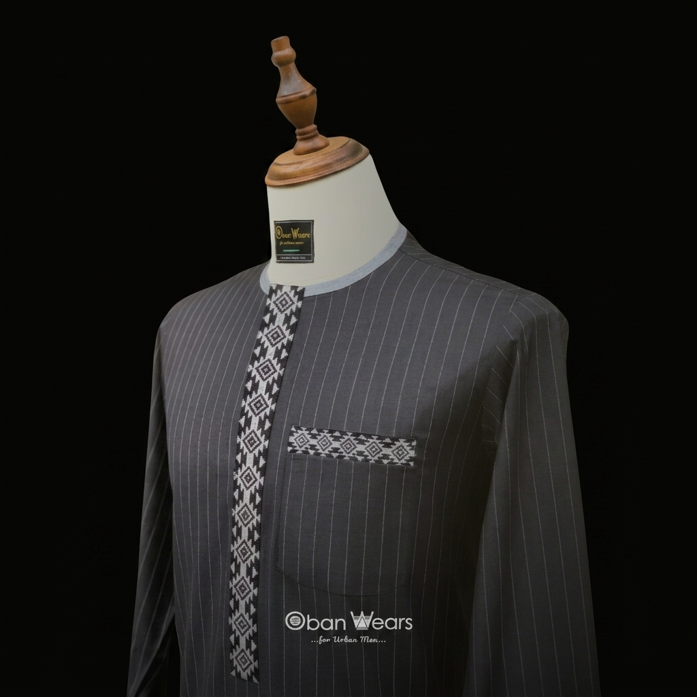

Walk into any serious meeting in Lagos, Abuja or Port Harcourt and look at the man everyone quietly defers to. More and more, he is not the one sweating in a three-piece wool suit built for London weather. He is the one in a crisp, perfectly fitted corporate kaftan, cool, composed and unmistakably in charge.
This is not a trend. It is a correction. For decades, Nigerian professionals were told that "corporate" meant Western. We wore heavy suits in 33 degree heat, loosened our ties in traffic and called it professionalism. Today, a new generation of executives, founders, lawyers, bankers and public servants has decided that power does not need a translator. It needs a great tailor.
Why the corporate kaftan is winning the Nigerian boardroom
Three forces are pushing the kaftan from Friday wear to everyday executive wear:
- Climate sense. A well cut kaftan in a breathable fabric keeps you sharp from the 7am traffic to the 7pm dinner. No wilted collar, no jacket over the arm, no damp back in the board meeting.
- Identity as strategy. Investors, partners and clients remember the man who looks rooted and confident. A kaftan says you know exactly who you are and where you are doing business.
- Modern tailoring. The new corporate kaftan is not the loose, shapeless garment of the past. It has a clean neckline, structured shoulders, a disciplined placket and a length that flatters. It is native wear engineered for the office.
A cheap suit says you are trying to fit in. A tailored kaftan says you already belong.
What a true corporate kaftan looks like
Not every kaftan belongs in a boardroom. If you want the authority of a suit with the ease of native wear, insist on these five details:
- Deep, conservative colours. Black, navy, charcoal, deep green and stone beige read as serious and expensive. Save the loud prints for the weekend.
- Structured shoulders. The shoulder seam must sit exactly on your shoulder bone. This single detail separates power dressing from pyjamas.
- A clean, controlled neckline. A round or band neckline with precise finishing frames the face the way a good shirt collar does.
- Restrained detailing. One statement element, such as subtle embroidery down the placket or a tonal pocket, is enough. Quiet confidence beats decoration.
- The right length. For the office, the top should fall around mid thigh, with trousers tapered to touch your shoe without pooling.

When to wear a kaftan instead of a suit
The smartest men keep both in the wardrobe and choose with intention. Reach for your corporate kaftan when:
- You are meeting Nigerian clients, investors or government stakeholders and want to signal cultural confidence.
- The day runs long, from office to site visit to evening event, and comfort will decide how sharp you look at 8pm.
- You are presenting, pitching or speaking on a panel and want to be the most memorable man in the room.
- Your organisation has a "smart" or "business native" dress code on Fridays and you intend to own it.
Keep the suit for international black tie and settings that explicitly demand Western formal wear. For a deeper breakdown, read our guide on suits vs kaftans and when to wear what.
The five mistakes that kill executive presence
- Buying off the rack. A kaftan that fits "almost" will make you look almost successful. Fit is the whole message.
- Choosing loud fabric for serious rooms. Busy prints pull attention away from your face and your words.
- Ignoring the trousers. Baggy or short trousers undo even the finest top.
- Wrong shoes. Pair your kaftan with polished leather loafers or clean formal sandals, never worn out slides. See our guide to accessorising traditional wear.
- Neglecting care. Faded colour and shiny pressing marks tell everyone the outfit is tired. Wash dark kaftans inside out and press with a cloth.
Why bespoke is the only real power move
Here is the truth most brands will not tell you: power dressing is not about the label, it is about the fit. Your shoulders, chest, arm length and posture are yours alone. A garment cut for an average body can never carry your authority the way a garment cut for you can.
That is exactly why we built Oban Wears around bespoke tailoring. For eight years we have been crafting premium kaftans for Nigerian men who refuse to blend in. We start by getting to know you: your work, your style, your body. Then we cut a kaftan that brings your personality to life. Our clients include executives, entrepreneurs and public office holders, among them Mr. Alabi Opeyemi Oladimeji, Special Adviser to the Lagos State Governor on Youth Mobilization.
Ready to walk into your next meeting dressed like the decision maker?
Book a bespoke consultation with Oban Wears. We will take your measurements, help you choose the right fabric and cut a corporate kaftan that works as hard as you do.
Frequently asked questions
Can I wear a kaftan to a corporate office in Nigeria?
Yes. Many Nigerian organisations now accept tailored kaftans as business attire, especially on Fridays and for client facing roles. Choose deep, conservative colours, a structured fit and minimal detailing so it reads as professional.
What colours are best for a corporate kaftan?
Black, navy, charcoal, deep green and stone beige are the safest and most powerful choices. They look expensive, pair with most shoes and suit almost every skin tone.
Is a kaftan more comfortable than a suit in Lagos weather?
For most men, yes. A kaftan in a breathable fabric allows air to move and removes the need for a jacket and tie, so you stay cooler and look fresher through a long day.
How do I order a bespoke corporate kaftan from Oban Wears?
Send us a message on WhatsApp at +234 816 800 3732 or visit our outlet opposite Technoil, Olowola Bus Stop, Igando, Lagos. We will take your measurements, guide your fabric choice and craft a kaftan made for your body.
Found this useful? Share it with a colleague who is still sweating in a suit.
← Back to journal